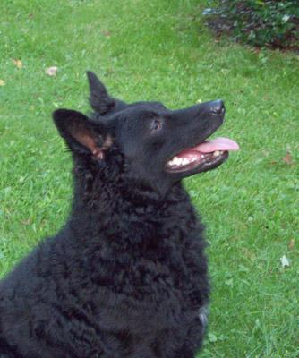

Tolnai Krisztián vagyok a budapesti Corvinus egyetem hallgatója.
Ez az oldal a Számítógép hálózatok nevű tantárgy
keretében készült.
Szeretek zongorázni, kajakozni, futni és fényképezni.
Ezen a linken keresztül lehet a google oldalát a weblapomról elérni.Kedvenc ételeim:
Kedvenc filmeim:
Az alábbi képen látható a kutyám:
